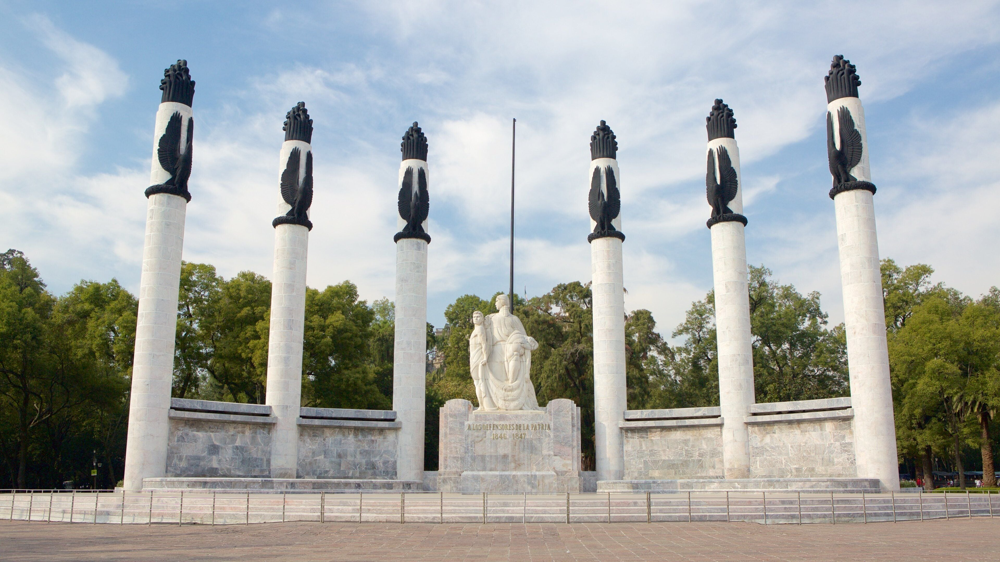
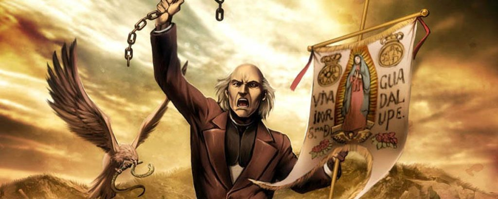
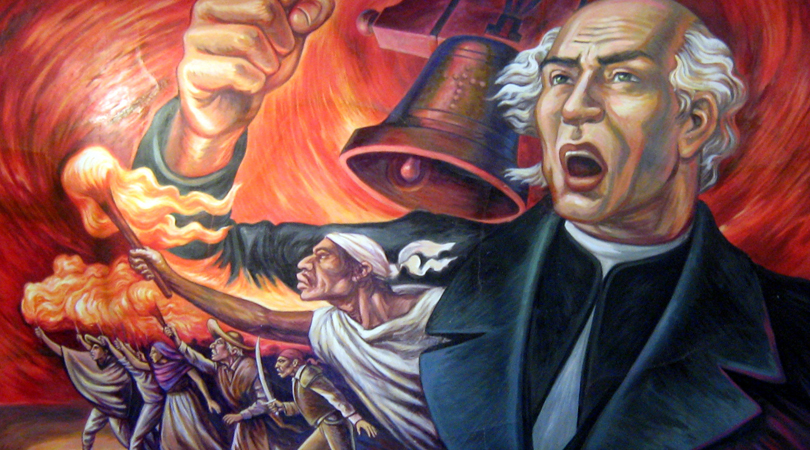
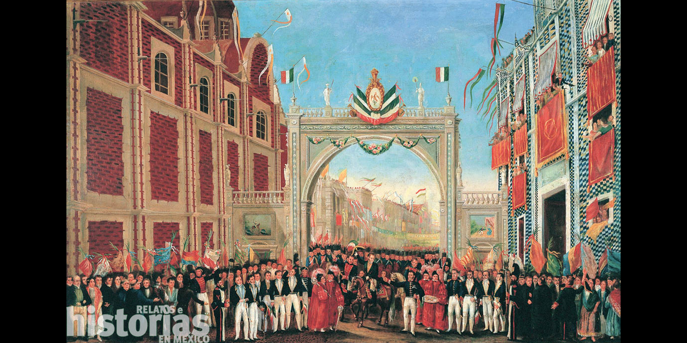
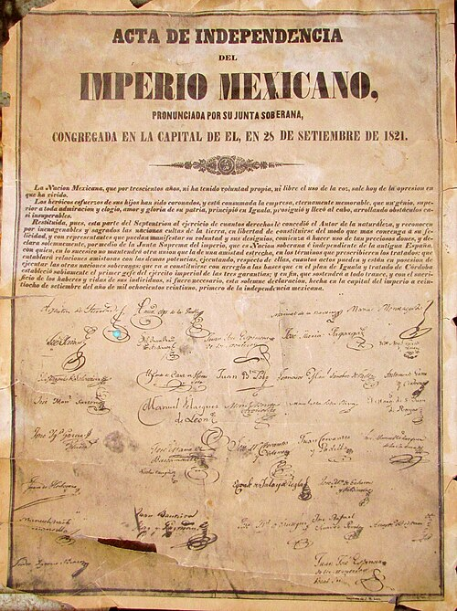

Fechas e hitos históricos de México en Septiembre
13 de septiembre - Gesta Heroica de los Niños Héroes de Chapultepec (1847):

Se rinde honor a los seis jóvenes cadetes del Heroico Colegio Militar (Juan de la Barrera, Juan Escutia, Francisco Márquez, Agustín Melgar, Fernando Montes de Oca y Vicente Suárez) que defendieron con su vida el Castillo de Chapultepec frente al avance de las tropas estadounidenses comandadas por el general Winfield Scott durante la Intervención Norteamericana. Su valentía simboliza el patriotismo y el honor de las Fuerzas Armadas mexicanas.
15 de septiembre - La Conmemoración del Grito de Dolores (1810):

Durante la noche del 15 de septiembre, el Presidente de la República, así como gobernadores y alcaldes en todo el país, evocan el llamado a las armas realizado por el cura Miguel Hidalgo y Costilla en la parroquia de Dolores, Guanajuato. Acompañado por el tañido de las campanas y el despliegue del estandarte de la Virgen de Guadalupe, este acto festivo reúne a la ciudadanía en plazas públicas para celebrar el orgullo nacional y la libertad.
16 de septiembre - Aniversario del Inicio de la Independencia de México (1810):

Constituye la fiesta patria de mayor trascendencia nacional. Se conmemora oficialmente el comienzo formal de la insurrección armada que buscaba liberar a la Nueva España del dominio colonial español. La jornada se caracteriza por el tradicional Desfile Militar en la Ciudad de México y actos civiles en todos los municipios, reconociendo el legado de los insurgentes que sentaron las bases de la soberanía mexicana.
27 de septiembre - Consumación de la Independencia de México (1821):

Se recuerda la entrada triunfal del Ejército Trigarante (de las Tres Garantías: Religión, Unión e Independencia) a la Ciudad de México, bajo el mando de Agustín de Iturbide y Vicente Guerrero. Este hecho histórico puso fin a más de 11 años de cruenta lucha armada y formalizó la creación del primer Imperio Mexicano, consolidando la separación definitiva de la Corona española y el nacimiento de la nación independiente.
28 de septiembre - Firma del Acta de Independencia del Imperio Mexicano (1821):

Un día después de la entrada de las tropas insurgentes a la capital, la Soberana Junta Provisional Gubernamental se reunió para redactar y firmar el Acta de Independencia de la Nación Mexicana. Este documento jurídico otorgó legitimidad formal al nuevo Estado soberano ante la comunidad internacional, proclamando la libertad política y territorial del país.